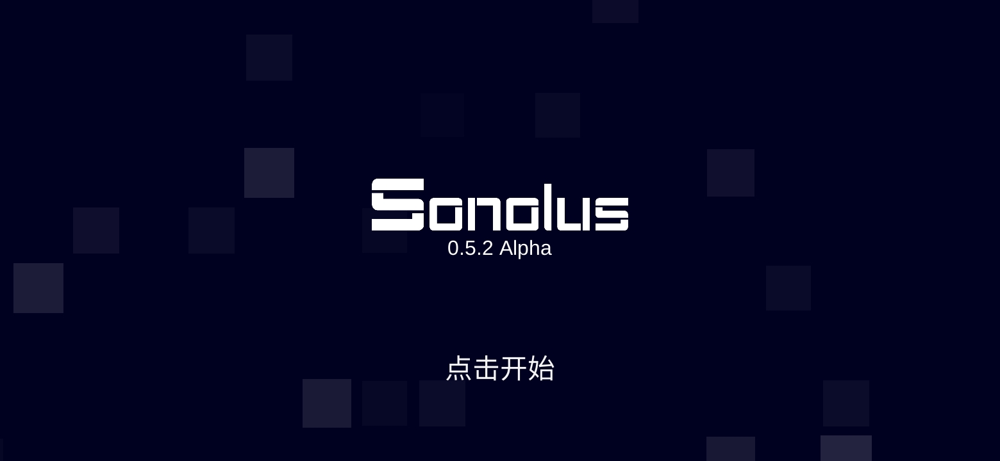
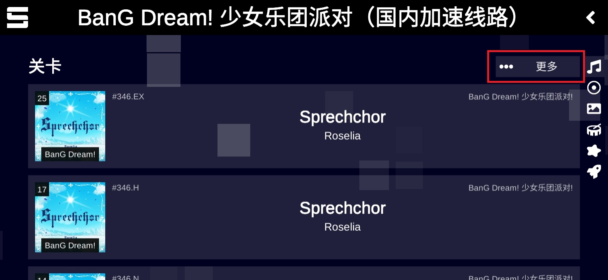

把 Sonolus 嵌进周末音游局：一条链搞定找谱、校准、联机、复盘
以前每次组音游局要先去三四个社区翻谱、换耳机又得重新调延迟、约人还得开临时群，Sonolus 把这些环节收进一个客户端，串成能落地的周末流程。
我每周六下午固定组一场音游局——以前这套流程是四步：去 B 站和社区论坛扒热门谱面、换好设备后挨个手动调音频延迟、在微信群喊人约时间、打完各自录回放再拼到一起剪。四步之间没有衔接点，每一步都要手动接力，经常出现"谱面找到了但没人来"或者"人齐了但某个人延迟还没调好"这类卡壳的情况。
现在这条链我改成以 Sonolus官网 为核心，前后串上飞书和 QQ 群，一次跑通。流程是这样的：周五晚上我打开 Sonolus 的服务器浏览，直接从托管服务器里挑好下周要打的谱面（不用翻帖子），选好后把服务器地址和关卡名贴到飞书的固定活动房间——这个房间里提前放了 Sonolus 的官方下载入口，新人点链接就能装；周六下午两点大家准时进 Sonolus 的 Casual Room，机器自动同步谱面和配置（包括音频延迟），打完一局回放自动存在本地，结束后各自把回放链接丢回 QQ 群做复盘。

旧流程卡在哪
先说说以前那套流程的具体痛点，这样你能对标自己的情况决定要不要换：
谱面来源分散。 以前我要去三个地方找谱——B 站的"自制谱面"分区、某音游论坛的资源楼、还有一个小众社区的 GitHub 仓库。每个地方的下载格式和命名都不一样，拿到手还要自己解压、放进正确的目录、重命名让游戏能识别。有时候一个热门谱面三个地方都有人传，版本还不一样，打起来判定就有差。Sonolus 把谱面托管在服务器上，客户端直接浏览关卡列表，点一下就加载——不是把文件下载到本地，而是直接从服务器流式读取，省了三四个手动搬运的步骤。
音频延迟校准每次重做。 我同时用蓝牙耳机和有线耳机，之前每次换输出设备都要进设置手动调——正负值试五六次才能找到差不离的数。而且不同手机的系统延迟不一样，队友用 iPhone、我用安卓，各自的默认值差得离谱。Sonolus 内置了自动校准：首次启动播放一串有节奏的提示音，听到声音的瞬间点屏幕，重复几次取平均值，推荐值直接写进全局设置。我实测下来自动校准的结果和我手动调半小时的误差在 5ms 以内，完全够打。换设备的时候重新跑一遍自动校准就行，不用记数值。
约局没有固定落点。 以前约局是在微信群临时喊"周六下午谁有空"，有空的人回"我来"，没空的人说"下次"——没有确认机制，临开场才发现有两个人临时有事。Sonolus 内置了联机服务器，创建房间可以设公开或私密、最多人数、赛制（Casual 轮流玩还是 Marathon 同时玩），房间号发出去，准备好的人自己进来，房主点"开始"就能开。
新流程怎么串起来
核心是 Sonolus 作为中间节点，两头挂飞书和 QQ 群。具体衔接点：
周五晚上——选谱面 + 通知。 我打开 Sonolus 进服务器浏览，按热度排序挑三四个下周想打的谱面。Sonolus 的关卡列表支持按难度、按时间、按评分筛选，比翻论坛资源楼效率高得多。挑好后，我把服务器地址（Sonolus 里可以直接复制）和关卡名贴到飞书固定活动房间。这个房间里我提前存了 Sonolus 的官方下载地址和服务器接入指南——新人第一次来照着做就能接入，不用我每次从头解释。
周六下午——联机局。 大家提前 10 分钟进 Sonolus，我创建 Casual Room，房间号发到飞书。Casual 模式是轮流玩，每个人都能点自己想打的谱面，适合我们这种没有竞技目标的局。Marathon 模式是所有人同时打同一首歌、同步比分数，适合认真对战的时候。网络要求不高，稳定的 Wi-Fi 就行，跨地区的队友我们试过从北京到上海，延迟在可接受范围内，不会不同步。
结束后——复盘。 打完每一局 Sonolus 自动保存回放，本地有一份 JSON 格式的录像数据，可以在回放系统里重放整个过程。我们把回放文件丢到 QQ 群，下周开始前还能拉出来对比谁上次的 Perfect 数多。

最容易断链的两个环节
这套流程跑了三周，只有两个地方出过问题——提前告诉你免得踩坑：
音频延迟自动校准在某些手机上会飘。 我队友用的某款安卓机，系统音频延迟本身就不稳定，自动校准给出的值在不同时间段差了 20ms。解决办法很简单：先跑自动校准拿个基准值，然后去Sonolus文档里对照手动微调的步骤——进设置 → 音频 → 音频延迟，单位是毫秒，正的是提前判定、负的是延后，每次调 5ms 玩完一首歌看 Great 判定的方向，往正确的方向再调 5ms 就行。换蓝牙耳机的话一定要重新校准，蓝牙耳机的延迟在 50~200ms 不等，和有线耳机完全不是一个量级。
跨地区联机偶尔同步不上。 上周有个队友从外地用 4G 接入，进入房间后开始不了游戏——房主点"开始"，其他人的客户端没收到指令。排查下来是他那边网络抖动，4G 在楼道里信号不稳定。解决办法是让他切 Wi-Fi，或者换官方推荐的 VPN——Sonolus 的联机服务器是官方的 multiplayer.sonolus.com，用稳定的 VPN 节点就能连上。
效果和边界
跑了三周，我的感受是：以前四步变两步，少了手动搬运谱面、少了手动校准延迟、少了约局的来回确认。以前组一局要花在前置准备上的时间大概 40 分钟，现在提前 5 分钟打开飞书发个房间号就行。
但这套流程也有边界：Sonolus 目前主要覆盖的是移动端（安卓/iOS），PC 端的支持还不完善，如果你的组里有人只用 PC，那他还得单独装别的客户端。另外，联机服务器目前只有官方的，自建服务器需要一点技术基础（得自己部署、自己维护），不想折腾的话直接用官方服务器就够了——托管的谱面数量已经不少，日常玩完全够。
我把这套流程用到现在，最大的体会是：Sonolus 不是一个单独的音游客户端，它更像是给音游圈做了一层"中间件"——把谱面托管、客户端配置、联机房间这三件事收进了同一个入口，让之前分散在各社区、各设备上的环节有了统一的落点。
Sonolus 的服务器托管、联机功能还有音频校准这块我都是从它的官方服务器介绍里摸的，具体参数和玩法细节官方资料里写得很全，里面有完整的关卡列表、皮肤自定义、还有背景制作的教程——如果以后组局想玩点带自制背景的谱面，那块资料我还没看完。Sonolus 整个客户端本身就是免费的，直接下载就能用，不用额外付费。
这套 Sonolus 的资料我同步到了三个仓库，不管你习惯用哪个平台都能拿到：GitHub、Gitee 和 GitCode 上的目录结构完全一致，选你访问最快的那个就行。